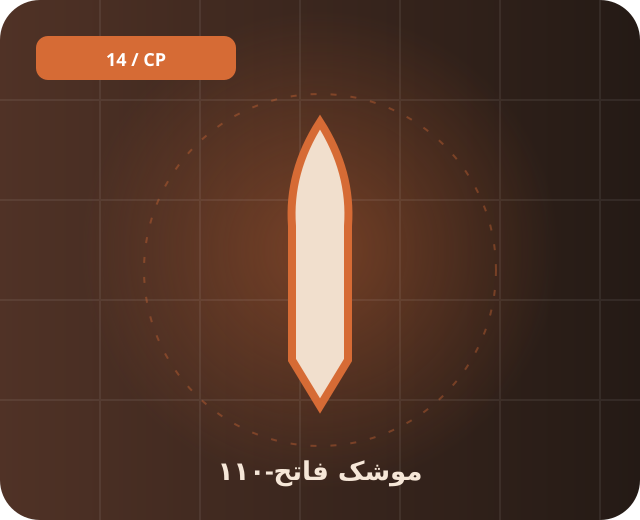

📚 پیشینه و معرفی
فاتح-۱۱۰ از خانواده موشکهای بالستیک سوخت جامد ایران است. این صفحه تنها اطلاعات شناسنامهای و تاریخی را ارائه میکند؛ برد و مشخصات گزارششده بین نسخهها و منابع تفاوت دارد.
موشک سوخت جامد که توسعه آن از دهه ۱۹۹۰ گزارش شده است.

فاتح-۱۱۰ از خانواده موشکهای بالستیک سوخت جامد ایران است. این صفحه تنها اطلاعات شناسنامهای و تاریخی را ارائه میکند؛ برد و مشخصات گزارششده بین نسخهها و منابع تفاوت دارد.
موشک بالستیک کوتاهبرد در دسته موشکی قرار میگیرد. موشک سوخت جامد که توسعه آن از دهه ۱۹۹۰ گزارش شده است.
برای شناخت دقیقتر، تاریخ انتشار منبع، نسخه دقیق تجهیز و تفاوت میان اعلام رسمی و ارزیابی مستقل را بررسی کن. یک نام گاهی به چند نسخه متفاوت اشاره دارد.
فاتح ۱۱۰، موشک، بالستیک